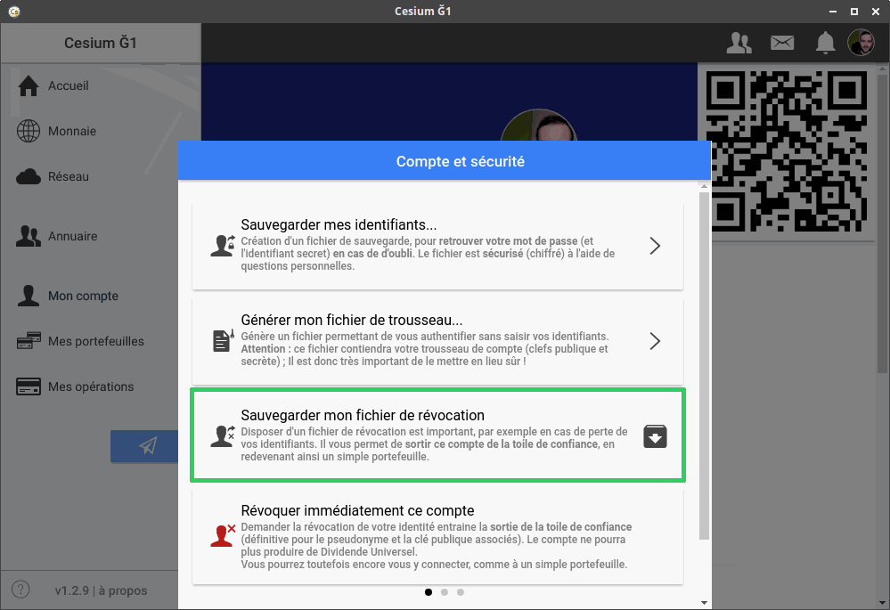

Comment ne pas être exclu de la communauté Ğ1 en cas de vol de votre compte ?
Il y a trois façons d'être exclu de la Ğ1 :
-
Vous enfreignez la licence Ğ1, par exemple en essayant de créer plusieurs comptes membre pour une même personne (vous ou quelqu'un d'autre)
-
La nouvelle se répandra à travers la communauté et vous ne serez plus jamais certifié. Vous perdrez la création monétaire à vie,
au sein de la Ğ1, et probablement même au sein d'autres monnaies libres.
-
Un pirate devine vos identifiants
-
Un pirate devine vos identifiants et s'en sert pour enfreindre la licence Ğ1 (typiquement, il créé de fausses identités.
Si vous ne vous rendez pas compte rapidement (dans les 5 jours idéalement) que quelqu'un autre que vous a certifié des identités,
vous vous rendez complice d'infraction à la licence Ğ1, et pouvez vous retrouver exclu de la Toile de Confiance. C'est d'autant plus
risqué de perdre vos identifiants ici.
-
Vous oubliez vos identifiants :
-
vous pouvez recréer un compte "simple portefeuille" et continuer à utiliser la Ğ1,
mais vous n'avez plus accès à la création monétaire (le DU) jusqu'à la fin de votre
adhésion (cette période peut durer 2 ans)
Le fichier de révocation
Le fichier de révocation permet d'éviter les désagréments engendrés par les points 2 et 3.
Le fichier de révocation vous permet de désactiver votre compte, dans le cas où celui-ci aurait été piraté.
Pour créer votre fichier de révocation, rendez-vous dans "Mon compte" puis "Options" puis "Compte et sécurité".
Enfin, cliquez sur "Sauvegarder mon fichier de révocation" :

Cesium vous
demandera alors de rentrer vos identifiants, puis il vous proposera
d'enregistrer votre fichier de révocation au format .txt
Vous devez imprimer ce fichier .txt et le conserver dans un lieu sûr.
Vous pouvez aussi générer un QR code de révocation à partir de ce fichier .txt, ce qui vous permettra de révoquer plus facilement votre compte si un jour il est piraté.